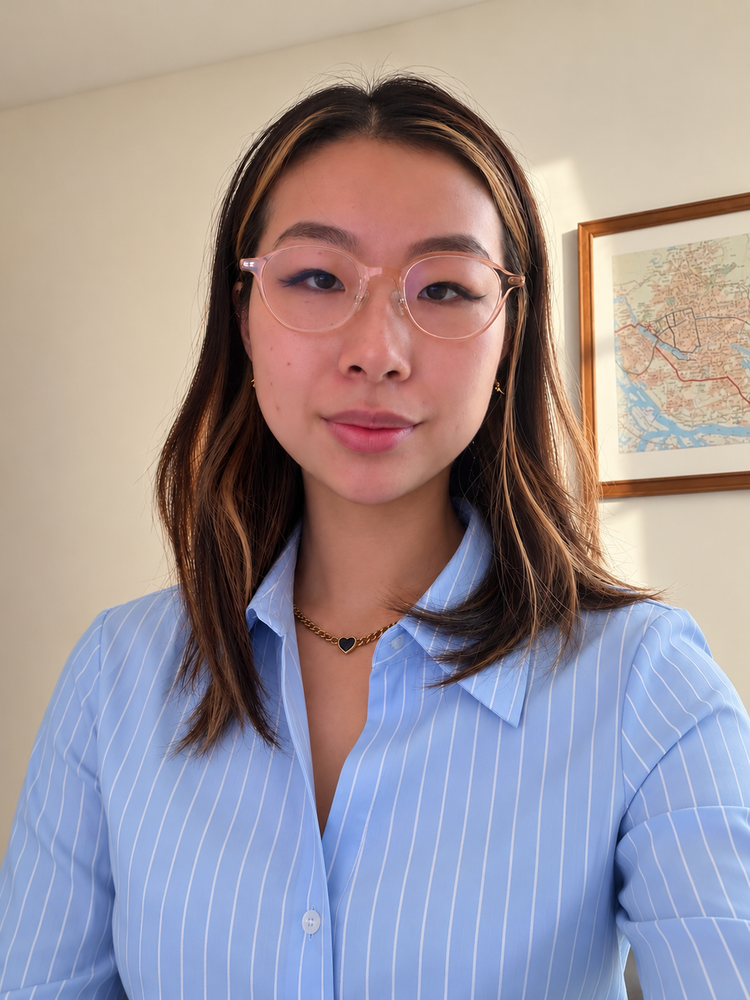

Hi, my name is Yuwei. I'm a registered nurse based in New York City.
My background is in art and design, where I've explored themes of identity, migration, memory, and community. My commitment to direct service, accessible education, and making a tangible difference in people's lives eventually led me to pursue nursing.
At the heart of both my artistic and nursing practices is a belief in the power of communication, empathy, and human connection. Whether through creative expression or therapeutic communication in patient care, I strive to create spaces where people feel heard, understood, and supported.
I see art and nursing not as separate paths, but as different ways of connecting with and caring for others. This journey is exactly where I want to be.